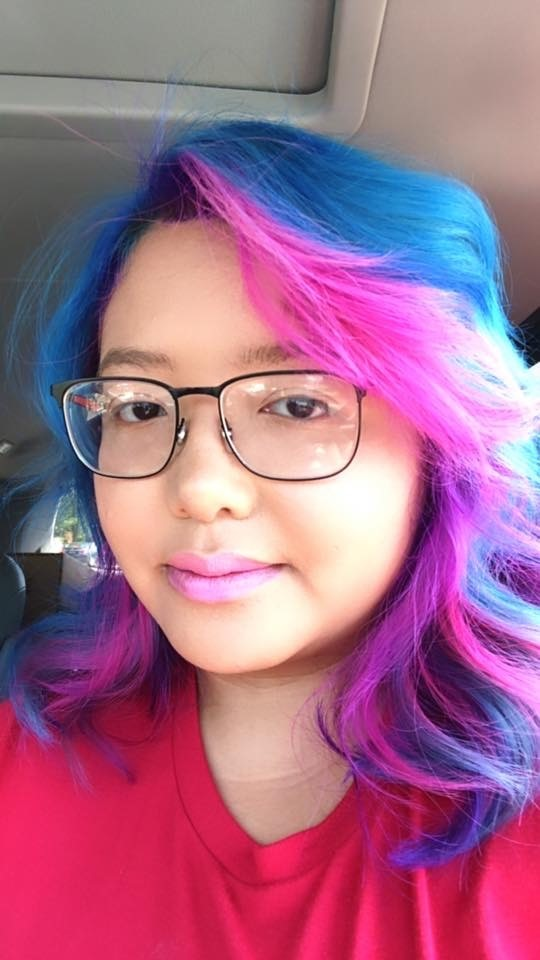

About Me

My name is Nancy, I was born and raised in Philadelphia. My family consist of me, my husband, and son. My favorite hobbies are traveling, hiking, biking, and white water raftings. I also play tennis and badminton. I had travel to many places such as Vietnam, Canada, China, Thailand, and Cambodia. The reason why I love traveling was because of my late grandmom. She started us when we were young.
Traveling all over the world is on the top on my bucket list and thanks to her I've come a long way. I tend to pick up languages easily, so at the moment I am taking Japanese and Khmer. In August of 2020 my family and I are planning to go to Japan. I want to be able to let my son see how big the world is and let him experience different cultures.